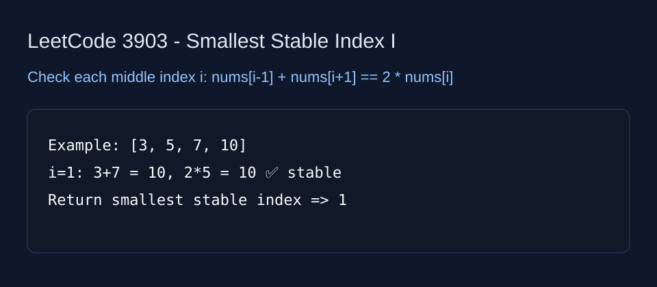

LeetCode 3903: Smallest Stable Index I (Array / Simulation)
Source: https://leetcode.com/problems/smallest-stable-index-i/

English
Scan each middle index i (1..n-2). If nums[i-1] + nums[i+1] equals 2 * nums[i], i is stable. Return the first one.
class Solution {
public int smallestStableIndex(int[] nums) {
for (int i = 1; i < nums.length - 1; i++) {
if (nums[i - 1] + nums[i + 1] == 2L * nums[i]) return i;
}
return -1;
}
}class Solution:
def smallestStableIndex(self, nums: List[int]) -> int:
for i in range(1, len(nums) - 1):
if nums[i - 1] + nums[i + 1] == 2 * nums[i]:
return i
return -1中文
遍历所有中间下标 i（1 到 n-2）。如果 nums[i-1] + nums[i+1] == 2 * nums[i]，说明 i 稳定，返回最小这样的 i。
class Solution {
public int smallestStableIndex(int[] nums) {
for (int i = 1; i < nums.length - 1; i++) {
if (nums[i - 1] + nums[i + 1] == 2L * nums[i]) return i;
}
return -1;
}
}class Solution:
def smallestStableIndex(self, nums: List[int]) -> int:
for i in range(1, len(nums) - 1):
if nums[i - 1] + nums[i + 1] == 2 * nums[i]:
return i
return -1